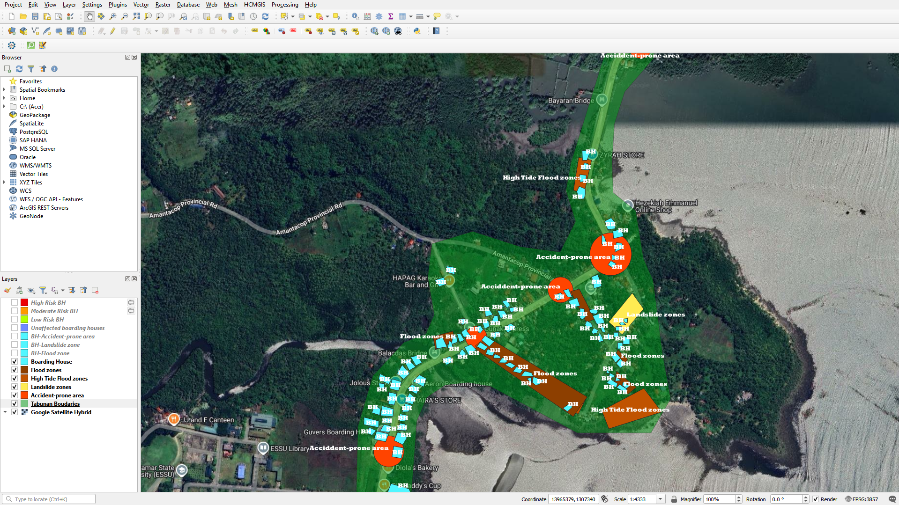

Boarding House Hazard Map
A QGIS mapping project for Brgy. Tabunan, Borongan City, Eastern Samar. It plots the boarding houses in the barangay and checks each one against hazardous areas, showing which are within range and which are safely outside. The result helps students, landlords, and local planners see where the risks are.